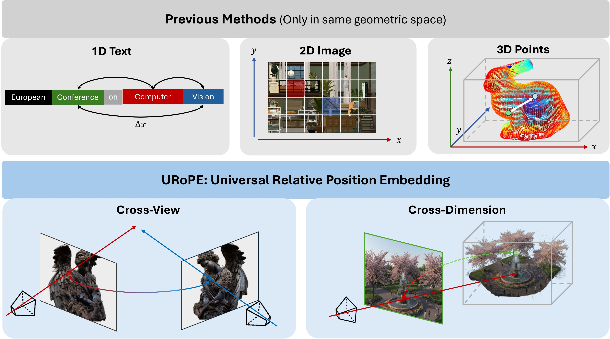
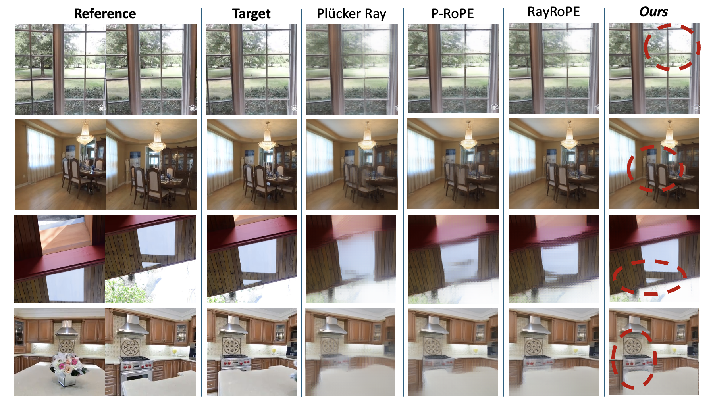

URoPE: Universal Relative Position Embedding across Geometric Spaces
TL;DR
We propose a parameter-free, intrinsics-aware, and SE(3)-invariant relative position embedding for cross-view geometry by explicitly lifting and projection with fixed depth anchors along camera rays.
Abstract
Relative position embedding has become a standard mechanism for encoding positional information in Transformers. However, existing formulations are typically limited to a fixed geometric space—1D sequences or regular 2D/3D grids—which restricts their applicability to many computer vision tasks that require geometric reasoning across camera views or between 2D and 3D spaces.
We propose URoPE, a universal extension of RoPE to cross-view or cross-dimensional geometric spaces. For each key/value image patch, URoPE samples 3D points along the corresponding camera ray at predefined depth anchors and projects them into the query image plane. Standard 2D RoPE is then applied using the projected pixel coordinates. URoPE is a parameter-free and intrinsics-aware relative position embedding that is invariant to the choice of global coordinate systems, while remaining fully compatible with existing RoPE-optimized attention kernels.
We evaluate URoPE as a plug-in positional encoding across novel view synthesis, 3D object detection, object tracking, and depth estimation, covering 2D–2D, 2D–3D, and temporal settings. Experiments show that URoPE consistently improves transformer-based models across all tasks, demonstrating its effectiveness and generality for geometric reasoning.

Method
The core question in cross-view relative position is:
Where does a key token’s 3D content appear in the query token’s image?
URoPE answers this with explicit projective geometry instead of abstract ray coordinates alone, so relative position is modeled in one shared image plane coordinate system.
Depth-anchored lifting and projection
Each patch center defines a camera ray linking 2D and 3D. Given fixed depth anchors \(\mathcal{D} = \{d_h\}_{h=1}^{K}\), a patch center \((u,v)\) in source view \(i\) is lifted to 3D points \(p_i^h(u,v) = o_i + d_h \cdot r_i(u,v)\), then projected into query view \(j\) to obtain pixel coordinates \((u_{i\to j}^h, v_{i\to j}^h)\) in the query plane.

Depth-anchored multi-head attention
Cross-view projection is depth-ambiguous along an epipolar line. URoPE assigns different fixed depth anchors to different heads (or head groups): each head encodes one depth hypothesis, and multi-head attention jointly covers near- to far-field correspondences. Per-head channels are split across horizontal and vertical axes so standard 2D RoPE applies in the query plane to maintain compatibility with efficient RoPE attention implementations.

Position embedding comparison
Summary of cross-view position embedding properties (see paper Table 1 for full notation).
| Method | Mechanism | Per-patch geo. | SE(3) inv. | Param-free |
|---|---|---|---|---|
| Plücker | Concat. | ✓ | ✗ | ✓ |
| Relative Ray | RoPE (ray) | ✓ | ✗ | ✓ |
| GTA | MatMul | ✗ | ✓ | ✓ |
| PRoPE | RoPE + MatMul | ✗ | ✓ | ✓ |
| RayRoPE | RoPE + Linear | ✓ | ✓ | ✗ |
| URoPE | RoPE (proj.) | ✓ | ✓ | ✓ |
Results
URoPE is integrated as a plug-in relative position embedding without task-specific redesigns.
Novel view synthesis
| Method | Objaverse | RealEstate10k | ||||
|---|---|---|---|---|---|---|
| PSNR | SSIM | LPIPS | PSNR | SSIM | LPIPS | |
| Plücker Ray | 22.28 | 0.856 | 0.279 | 23.95 | 0.764 | 0.118 |
| 6D RoPE | 24.42 | 0.891 | 0.191 | 25.73 | 0.819 | 0.086 |
| P-RoPE | 24.88 | 0.896 | 0.176 | 25.28 | 0.806 | 0.092 |
| RayRoPE | 24.96 | 0.897 | 0.175 | 24.94 | 0.799 | 0.097 |
| URoPE (ours) | 25.09 | 0.900 | 0.165 | 26.02 | 0.827 | 0.080 |
Qualitative results
Comparisons with other methods

Citation
@misc{xie2026urope,
title = {URoPE: Universal Relative Position Embedding across Geometric Spaces},
author = {Xie, Yichen and Meng, Depu and Peng, Chensheng and Hu, Yihan and Herau, Quentin and Tomizuka, Masayoshi and Zhan, Wei},
year = {2026},
note = {Manuscript under review}
}